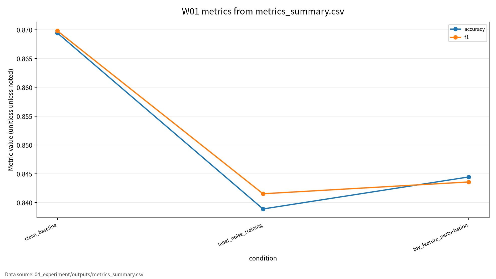
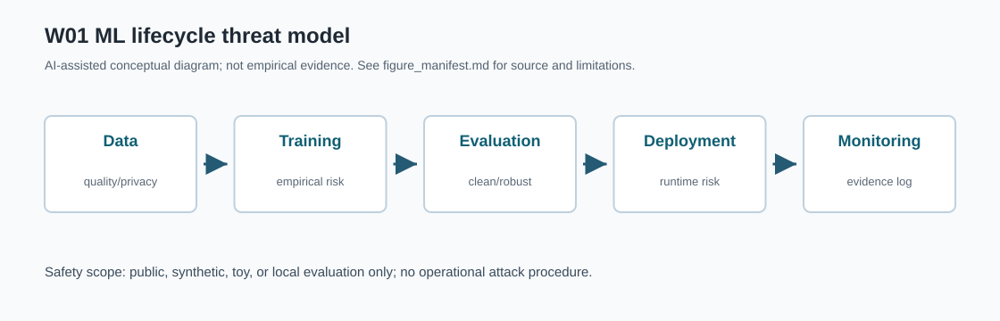

W01 Presentation
딥러닝 패러다임 &
ML 보안 분류학
딥러닝을 정확도 모델이 아니라 보안 평가가 필요한 ML 시스템으로 읽기
AI 원리 70%
보안 이슈 30%
논문 5편
safe toy evaluation
1 / 기준 주차
왜 W01이 중요한가
- 이후 주차의 공격과 방어를 읽기 위한 공통 언어를 만든다.
- 성능 중심 질문을 보안성 중심 질문으로 바꾼다.
- 핵심 질문: 모델이 잘 맞는다는 말은 보안적으로 충분한가?
W01의 목표는 딥러닝 원리를 ML 시스템 보안 평가 프레임으로 바꾸는 것이다.
2 / Roadmap
발표 흐름
- 딥러닝 원리 70%
- 보안 이슈 30%
- 논문 5편의 역할
- ML 생명주기 위협모형
- 평가 프레임과 실습 결과
- 한계와 기말논문 연결
3 / AI Principle
딥러닝 원리 70%
표현학습원시 입력에서 과제에 유용한 특징을 모델이 직접 학습한다.
역전파손실함수의 gradient를 이용해 파라미터를 갱신한다.
일반화학습 데이터 밖에서도 성능이 유지되는 성질이다.
과적합성능 문제이면서 privacy leakage의 위험 신호가 될 수 있다.
공격자는 입력만 바꾸는 것이 아니라 내부 표현과 decision boundary를 흔든다.
4 / Security Issue
보안 이슈 30%
| 보안 속성 | ML 보안 문제 | 대표 예 |
|---|---|---|
| Confidentiality | 학습 데이터와 민감 정보 노출 | membership inference, model inversion |
| Integrity | 예측 결과 조작 | adversarial example, poisoning |
| Availability | 탐지 실패 또는 오탐 폭증 | IDS 미탐, 오탐 비용 증가 |
| Accountability | 결과 재현과 책임 추적 실패 | seed, config, 로그 누락 |
5 / Paper Map
논문 5편의 역할
| ID | 중심 역할 | W01 활용 |
|---|---|---|
| P01 | 딥러닝 원리 | 표현학습, 역전파, 일반화 |
| P02 | ML 생명주기 보증 | 데이터-학습-검증-배포 증거 |
| P03 | 침입탐지 ML | 오탐, 미탐, 평가 지표 |
| P04 | 대적 공격과 방어 | robust accuracy, attack success rate |
| P05 | 프라이버시 공격 | leakage risk, 공격자 지식 |
단일 accuracy 표가 아니라 위협가정, 지표, 재현성 증거를 함께 기록해야 한다.
6 / Lifecycle Threat Model
ML 생명주기 위협모형
Data라벨 품질
편향
민감정보 노출
편향
민감정보 노출
Trainingpoisoning
overfitting
memorization
overfitting
memorization
Validationrobust 평가 누락
leakage 평가 누락
leakage 평가 누락
Deploymentevasion
model extraction
drift
model extraction
drift
Monitoringincident log
재현성
운영 추적
재현성
운영 추적
평가 단위는 모델 하나가 아니라 전체 ML 생명주기다.
7 / Evaluation Frame
평가 프레임
| 평가축 | 질문 | 대표 지표 |
|---|---|---|
| Clean performance | 정상 조건에서 잘 맞는가 | accuracy, precision, recall, F1 |
| Robust performance | 교란 조건에서도 유지되는가 | robust accuracy, attack impact |
| Privacy leakage | 민감 정보가 새는가 | leakage risk, attack advantage |
| Reproducibility | 결과를 다시 만들 수 있는가 | seed, config, code, logs |
8 / Experiment Design
실습 설계
- 데이터: synthetic binary classification data
- 모델: 표준 라이브러리 기반 toy logistic regression
- 조건: clean baseline, label-noise training, toy feature perturbation
- 점검: privacy-safe overfitting/confidence audit
안전 범위: 개인정보, 실제 서비스 질의, 무단 접근, 악성코드 실행 없음.
9 / Experiment Result
실습 결과
| 조건 | Accuracy | Precision | Recall | F1 |
|---|---|---|---|---|
| Clean baseline | 0.869444 | 0.867403 | 0.872222 | 0.869806 |
| Label-noise training | 0.838889 | 0.827957 | 0.855556 | 0.841530 |
| Toy feature perturbation | 0.844444 | 0.848315 | 0.838889 | 0.843575 |
정상 조건 성능만으로는 라벨 품질 저하나 입력 교란 취약성을 설명할 수 없다.
10 / Privacy-Safe Audit
Privacy-safe audit
Train accuracy0.857143
Test accuracy0.869444
Train-test gap-0.012301
Risk labellow_overfitting_signal
이 결과는 실제 데이터 대상 membership inference 공격 결과가 아니다.
11 / Limits
한계와 오픈 문제
- Synthetic toy evaluation은 실제 운영망의 공격 표면을 대표하지 않는다.
- Survey taxonomy를 실제 평가로 연결하려면 데이터셋과 공격자 지식이 필요하다.
- Privacy risk는 단일 수치로 요약하기 어렵다.
- 재현성 증거는 보안 주장을 검토할 수 있게 하는 최소 조건이다.
12 / Conclusion
결론과 기말논문 연결
- 딥러닝 원리는 보안 취약성의 기술적 배경이다.
- ML 보안은 생명주기 전체에서 평가해야 한다.
- clean, robust, privacy, reproducibility를 분리해 기록해야 한다.
기말논문 후보: ML 생명주기 기반 AI 보안 평가 프레임워크
Formula / W01
핵심 수식과 기호
Empirical Risk와 Generalization Gap
$$
\hat{R}(\theta)=\frac{1}{n}\sum_{i=1}^{n}\ell(f_\theta(x_i),y_i),
\qquad
Gap=R_{\mathrm{test}}(\theta)-\hat{R}_{\mathrm{train}}(\theta)
$$
보안 관점에서는 clean 성능이 높아도 공격·교란·privacy 조건의 위험이 별도로 남을 수 있다. 따라서 lifecycle 평가에서는 데이터, 학습, 검증, 배포 로그를 함께 본다.
Robust Accuracy와 ASR
$$
RA_\epsilon=\Pr_{(x,y)\sim D}\left[f_\theta(x+\delta)=y,\ \forall \delta \in \Delta_\epsilon\right],
\qquad
ASR=\frac{1}{m}\sum_{j=1}^{m}\mathbf{1}[f_\theta(\tilde{x}_j)=y_j^{target}]
$$
보안 평가는 clean accuracy 하나로 끝나지 않고 robustness와 privacy leakage를 분리해야 한다.
수식은 표준 정의식이며 원문 위치와 formal guarantee는 최종 검토 대상이다.
W01 formula supplement
Visual / W01
그래프와 Pipeline Diagram

그래프는 `metrics_summary.csv`의 condition별 accuracy와 F1만 시각화한다. Clean baseline, label-noise training, toy feature perturbation 조건을 같은 축에 두어 정상 성능만으로 보안성을 단정하기 어렵다는 점을 보여준다. synthetic/toy 평가 결과이므로 실제 운영 시스템 보증으로 해석하지 않는다.

AI-assisted conceptual diagram. See assets/figure_manifest.md.
Source: outputs/metrics_summary.csvML lifecycle threat model